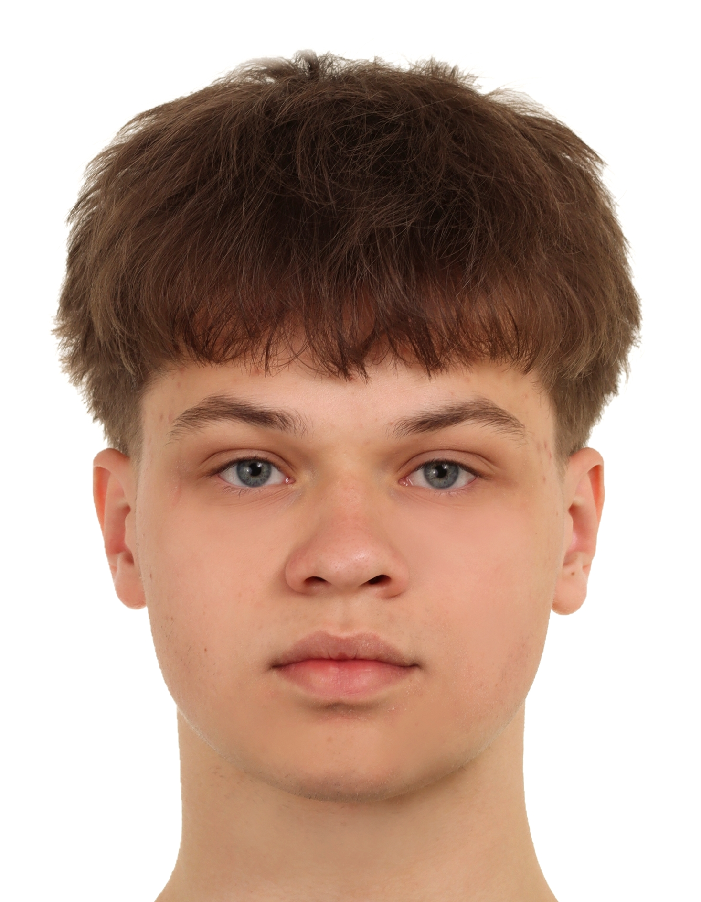

Stażysta / Wolontariusz
Warszawa | 2023 - Obecnie
Udział w projektach społecznych, pomoc w organizacji wydarzeń, nauka podstaw pracy biurowej.

Student / Junior Developer
Mam 18 lat. Mieszkam w Warszawie. Jestem zmotywowany do nauki nowych technologii webowych i rozwoju swoich umiejętności programistycznych. Szukam możliwości zdobycia praktycznego doświadczenia.
Warszawa | 2023 - Obecnie
Udział w projektach społecznych, pomoc w organizacji wydarzeń, nauka podstaw pracy biurowej.
Warszawa | Lato 2023
Praca w obsłudze klienta, dbanie o porządek, komunikacja z zespołem.
Szkoła Średnia / Liceum
Warszawa | 2019 - 2023 (Przewidywany rok ukończenia)